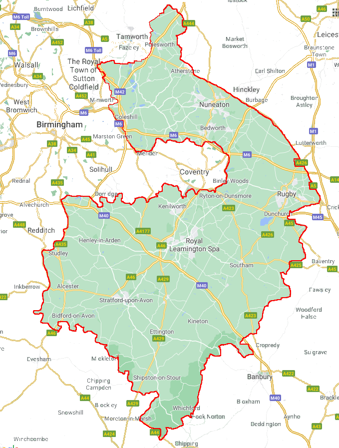

The key message for 2020 is that the number of our callouts, and the hours volunteered on callouts, has continued its steady rise and was largely unaffected by the pandemic.
We quickly got a covid safe policy in place which enabled us to continue with operational callouts. We have also adapted our training protocols to ensure that we, and the people we work with, remain as safe from Covid as possible.
The steady increase in volunteer search hours shows that the work we are doing in building relationships with Warwickshire and West Midlands Police is productive and I'm sure this trend will continue. We hope to continue to build the breadth and depth of those key relationships.
Overall membership remains strong, with 35 operational members, and 30 trainees working to swell the ranks during 2021.
Volunteering activity is high, and has grown over the last couple of years. Inevitably the pandemic has affected our ability to run training events, ut our overall training programme continues and remains strong.
Our volunteers have spent more time on actual incidents, as many fund-rasing events have been rescheduled, curtailed or postponed so our the time our volunteers can spend on fund-raising events has reduced. We are looking forward to stepping up activities as circumstances allow.
In a typical year around 700 people go missing in Warwickshire, the equivalent of two people every day.

Thankfully many missing people soon return safe and well to their friends and family. When they do not, often because they suffer from a form of dementia or wish to harm themselves, Warwickshire Search and Rescue are there to support the Police in finding those people.
Warwickshire Search and Rescue Team is an operational Lowland Rescue team, set up to assist the Police with searches for vulnerable missing persons within Warwickshire, and sometimes beyond. Our team is part of a much bigger family of 36 Lowland Rescue teams across the United Kingdom.

All teams are members of the Association of Lowland Search and Rescue (ALSAR). ALSAR set the training standards that we all have to reach, and the code of practice that we use, working alongside the police. With Mountain Rescue England and Wales (MREW), Mountain Rescue Committee of Scotland (MRC of S), and the British Cave Rescue Council (BCRC), ALSAR members are nationally recognised as part of UKSAR capability.
Our team volunteers directly for Warwickshire Police, providing valuable search management services and physical resources to search on land and inland waterways. In addition, we often get called out by neighbouring Lowland Rescue teams, as well, to assist them in police searches within their areas, as they will also assist us at times. We are usually called out by Police Search Advisors, but this can vary between police forces. It is important to mention that we cannot be called out by members of the public, only by government agencies.


Most of our work involves locating high risk missing people, those most at risk of injury or loss of life, either through their own actions, their environment, or due to illness or injury. However, Lowland Rescue teams can be called upon for other tasks, such as helping people in flooded areas.
All team members are unpaid volunteers from all walks of life, from 18 to 80 years old. We are available to respond to callouts 24 hours a day, 7 days a week, every day of the year. As well as search management personnel, team leaders and search technicians, Warwickshire Search and Rescue also has a search dog team and a specialist kayak team. To learn more about the roles within our team, or to find out how to join the team, click here.

We are a registered charity**, and, when we're not out searching or training, we are often at various locations in Warwickshire, raising much needed funds for equipment for the team, things such as first aid kits and vital software. However, we really appreciate support from local companies too. If you would like to help us save the lives of others, please visit our Support Us page.
Warwickshire Lowland Search and Rescue was established in 2013, by the end of that year there were 20 members, with five being operational.
At the end of 2020, despite the challenges of the Covid 19 pandemic, there were 86 members, 35 of whom were fully operational.

Most searches are conducted on-foot. Even those that use, or are led by, other teams will nearly always have on on-foot element. It would be extremely rare for a search to be successfully concluded without a team of on-foot search technicians reaching the person.
The simplest and safest means of extracting a casualty is often on-foot. Using a stretcher a casualty can be taken to recieve the care they need by paramedics or other specialist teams.


The whole Warwickshire Search and Rescue team train primarily for on-foot search and rescue, although many team members have other skills that can complement the all-terrain teams.
The Kayak Search Team is a dedicated team of highly competent kayakers. All team members are qualified and operational Lowland Search Technicians, who have developed these skills for the water environment. All are skilled paddlers, capable of using a range of craft. Most of the team are active white water paddlers, and all are coaches with British Canoeing Safety and Rescue qualifications.

Warwickshire Search and Rescue were successful in their application for funding from the People's Postcode Lottery. This has enabled us to buy new kayaks, as well as all the personal protective equipment (P.P.E) required to use them safely, including helmets and dry suits. It also means that our kayak team can deploy faster than previously, as all the equipment they need will be at the meeting point. We would like to thank the People's Postcode Lottery for helping us to provide this essential service to the residents of Warwickshire.
Kayaks are an ideal rapid deployment water search craft, which can be used in any waterway, but are especially useful in shallow, narrow, environmentally sensitive or difficult to access waters. Since most of Warwickshire's waterways are small and shallow kayaks are the ideal search vehicles for these waterways.

If you are interested in joining our Kayak Team, please visit the Join Us page for more information. If you have any further questions, e-mail volunteering@warksar.org.uk.
Leamington Observer 26/1/21

Leamington Observer 20/1/21